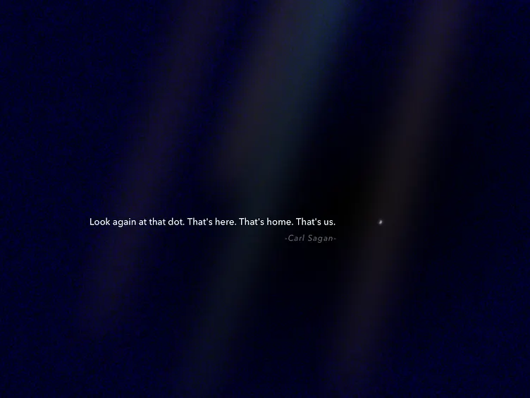

    
    <section id="quotes-container">
        <div class="page-header">
            <h1>Quotes</h1>
            <div class="hashtag-container">
                <div class="hashtag" draggable="true">
                    <span>#inspiration</span>
                    <span class="material-icons close-icon">close</span>
                </div>
                <div class="hashtag" draggable="true">
                    <span>#motivation</span>
                    <span class="material-icons close-icon">close</span>
                </div>
                <div class="hashtag" draggable="true">
                    <span>#wisdom</span>
                    <span class="material-icons close-icon">close</span>
                </div>
            </div>
        </div>
        <div id="quotes-grid">
            <!-- Quotes will be dynamically loaded here -->
        </div>
    </section>
